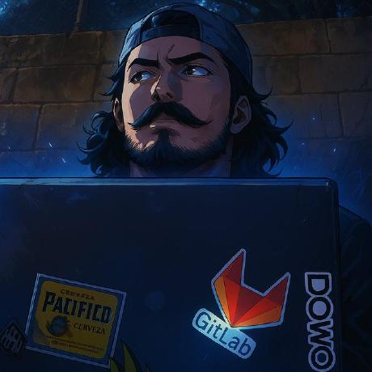

Hey, I'm Rafael 👋Hola, soy Rafael 👋
Rafael Pérez
a .NET engineer who builds identity systems.ingeniero .NET que construye sistemas de identidad.
I wrote RufistoWard — an open-source OAuth 2.0 and OpenID Connect identity server for .NET 10, built because Duende priced IdentityServer out of reach and IdentityServer4 reached end of life. Every flow in it is free.
Escribí RufistoWard — un servidor de identidad OAuth 2.0 y OpenID Connect de código abierto para .NET 10, hecho porque Duende dejó IdentityServer fuera del alcance de muchos e IdentityServer4 llegó a su fin de vida. Todos sus flujos son gratuitos.
I've been shipping .NET since 2015 — eleven years: warehouse robots, then enterprise integration, now identity. Mechatronics engineer by training, based in Mexico City. Open to .NET engineering roles.
Llevo desarrollando en .NET desde 2015 — once años: primero robots de almacén, después integración empresarial, ahora identidad. Ingeniero mecatrónico de formación, radicado en la Ciudad de México. Abierto a posiciones de ingeniería .NET.
rafael@rufistofeles.dev · rufistofeles.dev · github.com/Rufistofeles · linkedin.com/in/rufistofeles · Mexico CityCiudad de México
Selected workTrabajo seleccionado
RufistoWard
An open-source identity server with every flow free, a built-in admin UI, and migration tooling off IdentityServer4 — written by someone who has moved production instances, not by someone who read the docs.
Un servidor de identidad de código abierto con todos los flujos gratuitos, interfaz de administración incluida y herramientas de migración desde IdentityServer4 — escritas por alguien que ha movido instancias en producción, no por alguien que leyó la documentación.
The OpenID Foundation Basic OP and Config OP conformance plans are published and passing — you can check them yourself. Admin UI in Tailwind CSS v4 and HTMX, no JavaScript framework.
Los planes de conformidad Basic OP y Config OP de la OpenID Foundation están publicados y pasando — puedes verificarlos tú mismo. Interfaz de administración en Tailwind CSS v4 y HTMX, sin framework de JavaScript.
Aspire.Hosting.OpcUa
A factory floor in your Aspire dashboard. One line, no PLC required — it wraps Microsoft's OPC UA simulator as a first-class Aspire resource, with fast nodes, slow nodes and alarms configurable from the app model.
Una planta industrial en tu dashboard de Aspire. Una línea, sin necesidad de PLC — envuelve el simulador OPC UA de Microsoft como un recurso nativo de Aspire, con nodos rápidos, nodos lentos y alarmas configurables desde el modelo de la aplicación.
Built because no OPC UA integration existed in the Aspire Community Toolkit or on NuGet.
Lo construí porque no existía ninguna integración de OPC UA en el Aspire Community Toolkit ni en NuGet.
Home automation over the mainsDomótica sobre la instalación eléctrica
My first real system: lights controlled over the house electrical wiring, because my mother has knee osteoarthritis and the switch was across the room. Still online, still the thing everything since has rhymed with.
Mi primer sistema real: luces controladas a través del cableado eléctrico de la casa, porque mi madre tiene artrosis de rodilla y el apagador estaba del otro lado del cuarto. Sigue en línea, y sigue siendo aquello con lo que rima todo lo que vino después.
ExperienceExperiencia
Web, M2M & IoT DeveloperDesarrollador Web, M2M e IoT
2019 — present2019 — actualDOMO, Agencia de Desarrollo de Software · Mexico CityCiudad de México
- Single sign-on in production since 2019 — Azure AD and OpenID Connect, across both web and desktop applications.
- Inicio de sesión único en producción desde 2019 — Azure AD y OpenID Connect, en aplicaciones web y de escritorio.
- Architected and deployed web applications in C#, ASP.NET MVC and .NET Core.
- Diseñé y desplegué aplicaciones web en C#, ASP.NET MVC y .NET Core.
- Built SAP integration interfaces over SOAP and REST, connecting enterprise resource planning to the rest of the estate.
- Construí interfaces de integración con SAP sobre SOAP y REST, conectando el ERP con el resto de los sistemas.
- Modernised legacy desktop systems, moving VB.NET applications forward into C#.
- Modernicé sistemas de escritorio heredados, migrando aplicaciones de VB.NET hacia C#.
- Delivered electronic invoicing to Mexico's CFDI v3.3 and v4 standards — both issuance and supplier invoice receipt.
- Entregué facturación electrónica conforme a los estándares CFDI v3.3 y v4 — tanto emisión como recepción de facturas de proveedores.
Senior Web ConsultantConsultor Web Sr.
2017 — 2019Verquet SA de CV · Mexico CityCiudad de México
- Designed and built a business solutions web portal in ASP.NET MVC.
- Diseñé y construí un portal web de soluciones de negocio en ASP.NET MVC.
- Led development of a CFDI v3.3 electronic invoicing system — client invoice generation and supplier invoice processing.
- Lideré el desarrollo de un sistema de facturación electrónica CFDI v3.3 — generación de facturas a clientes y procesamiento de facturas de proveedores.
- Worked directly with cross-functional teams to gather requirements and deliver to client specification.
- Trabajé directamente con equipos multidisciplinarios para levantar requerimientos y entregar conforme a la especificación del cliente.
WCS Developer SpecialistEspecialista en Desarrollo WCS
2015 — 2017Andlogistics · Mexico CityCiudad de México
- Warehouse control system for Layer Picker robots and Put-to-Light, written in VB.NET and running on a real warehouse floor.
- Sistema de control de almacén para robots Layer Picker y Put-to-Light, escrito en VB.NET y corriendo en un almacén real.
- Integrated the WCS with WMS Manhattan and AGV robots, coordinating automated material handling.
- Integré el WCS con WMS Manhattan y robots AGV, coordinando el manejo automatizado de materiales.
- Extended it to conveyors and sorter systems, with SAP and WMS integration throughout.
- Lo extendí a bandas transportadoras y sistemas de clasificación, con integración a SAP y WMS de extremo a extremo.
What I work withCon qué trabajo
- DailyA diario
- .NET 10, C#, ASP.NET Core, Entity Framework Core, OAuth 2.0 / OIDC, Azure AD, Clean ArchitectureClean Architecture
- Around itAlrededor
- SQL Server, PostgreSQL, T-SQL, Docker, Azure DevOps, .NET Aspire, Tailwind CSS, HTMX
- Older, still usefulMás viejo, aún útil
- VB.NET, ASP.NET MVC, SOAP, SAP and WMS integration, CFDI v3.3 / v4VB.NET, ASP.NET MVC, SOAP, integración con SAP y WMS, CFDI v3.3 / v4
- The other side of the fenceDel otro lado
- OPC UA, X10, Arduino, Raspberry Pi, AGVs, conveyors and sortersOPC UA, X10, Arduino, Raspberry Pi, AGVs, bandas transportadoras y clasificadores
- LanguagesIdiomas
- Spanish (native), English (conversational)Español (nativo), inglés (conversacional)
EducationFormación
Mechatronics EngineeringIngeniería Mecatrónica
Fray Luca Paccioli · 2013
Electronics and Communications Engineering — 8 semestersIngeniería en Comunicaciones y Electrónica — 8 semestres
Instituto Politécnico Nacional · 2010
A few things about meAlgunas cosas sobre mí
- Mechatronics and C# aren't two careers to me. Lights over the mains, then machines over OPC UA, now tokens over HTTP. Same problem every time: get a signal through a channel that wasn't built for it, and prove on the other side that it arrived intact.
- La mecatrónica y C# no son dos carreras para mí. Luces sobre la corriente, luego máquinas sobre OPC UA, ahora tokens sobre HTTP. El mismo problema siempre: meter una señal por un canal que no fue hecho para ella, y comprobar del otro lado que llegó intacta.
- RufistoWard is my day job, generalised and given away. I've done identity professionally since 2019. The open-source server is what that work looks like when it isn't tied to one company's estate.
- RufistoWard es mi trabajo diario, generalizado y regalado. Llevo haciendo identidad profesionalmente desde 2019. El servidor de código abierto es cómo se ve ese trabajo cuando no está atado a los sistemas de una sola empresa.
- I'm in Mexico City, I work in Spanish and English, and I answer my own email.
- Estoy en la Ciudad de México, trabajo en español e inglés, y contesto mi propio correo.
Find me on GitHub or LinkedIn, or shoot me an email.
Encuéntrame en GitHub o LinkedIn, o mándame un correo.
rafael@rufistofeles.dev · @Rufistofeles